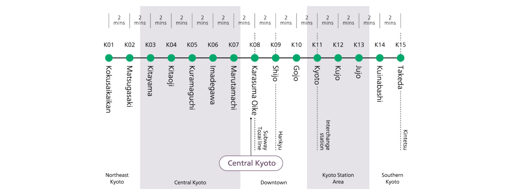
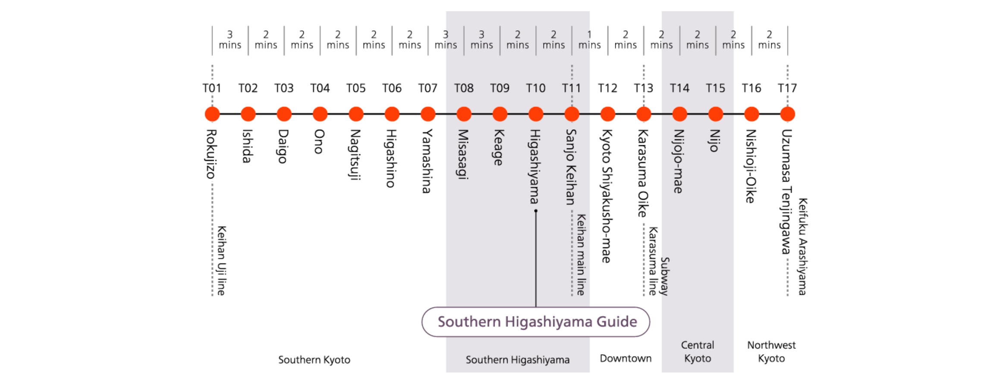
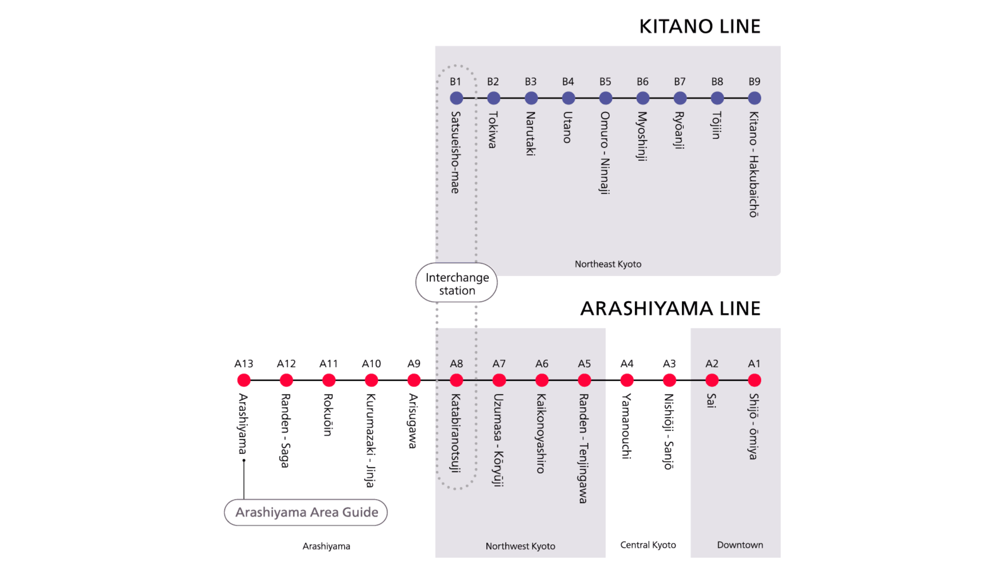
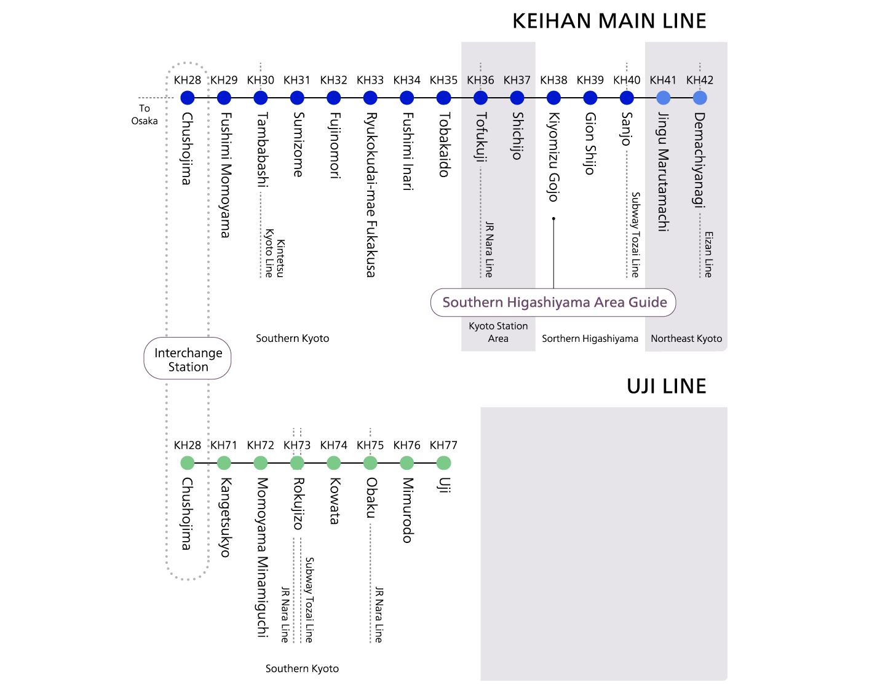
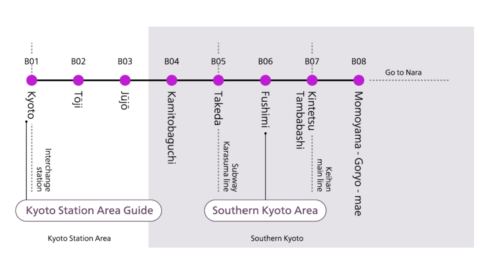
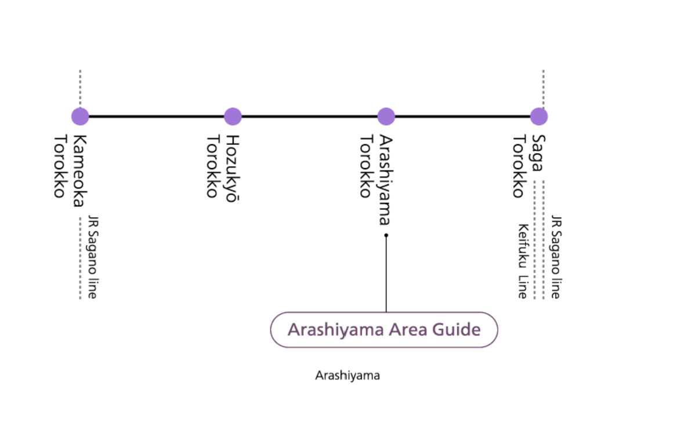
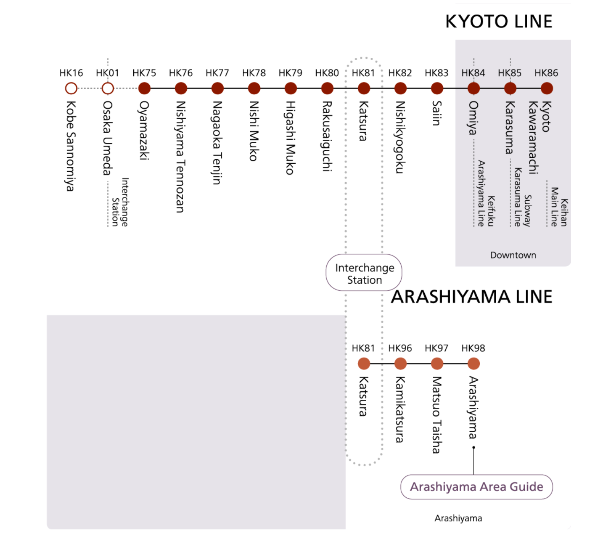
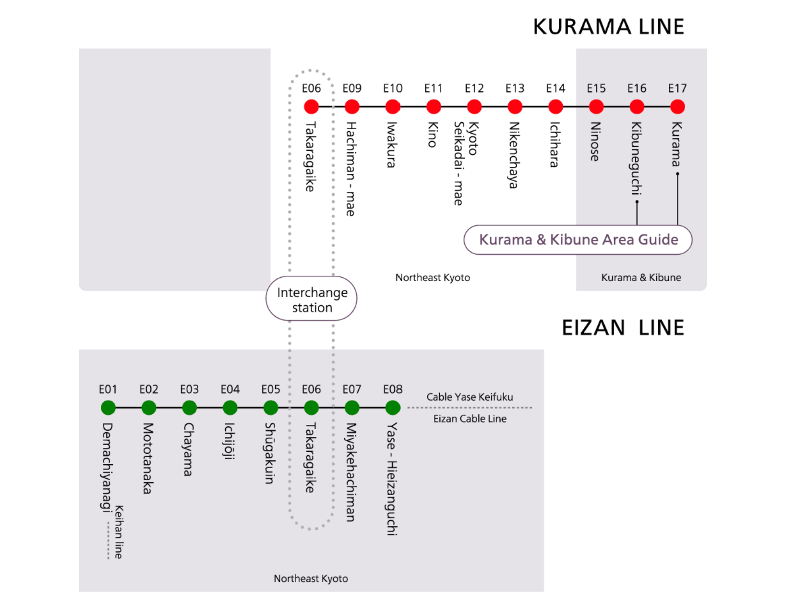

Subways:
The Kyoto Municipal Subway is an underground railway network with just two lines: the Karasuma Subway Line which runs north to south, and the Tozai Subway Line which runs east to west. These two lines are connected at Karasuma Oike Station. Although this subway system is quite limited, it can be used in combination with other bus and railway networks to access most areas of the city.
- Karasuma Line Stations 
- Tozai Line Stations 
- Keifuku Line (Randen) 
- Keihan Line 
- Kintetsu Line 
- Sagano Scenic Line 
- Hankyū Line 
- Eizan Line 